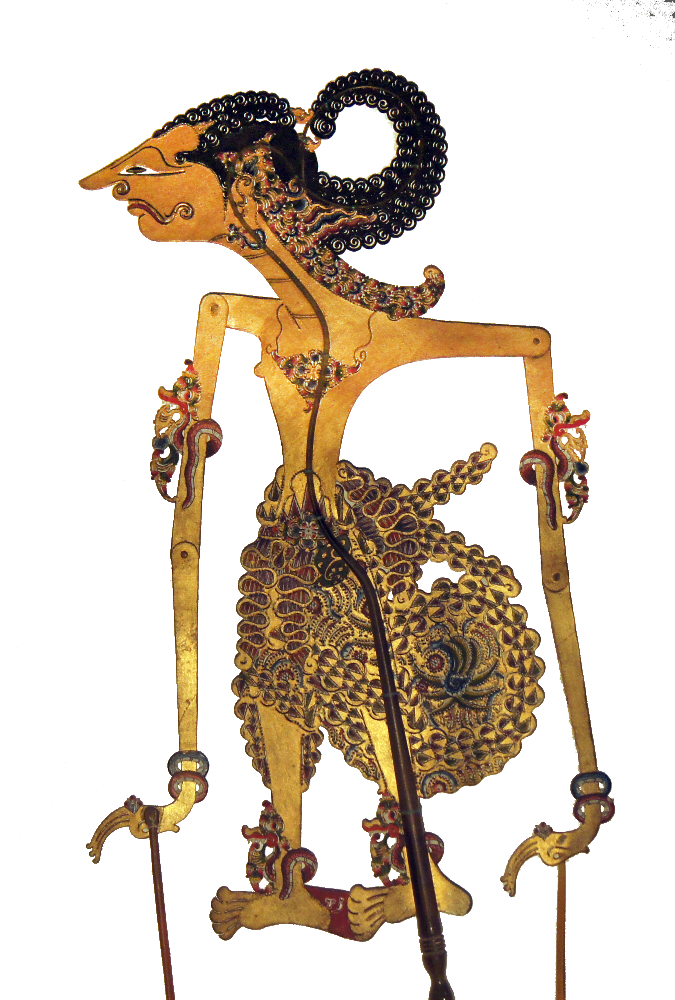
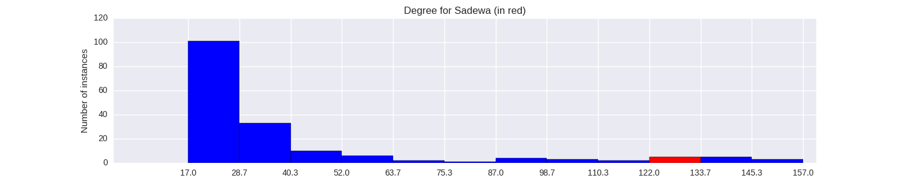

Quantiative Wayang Dictionary
Sadewa
Terms of address: Raden
Type: Human
Origin: India
Notes on the Sanskrit version: Sahadeva is known to be the most knowledgeable one amongst the Pandavas. Born to Pandu and Madri, he is said to be well versed in astrology and could understand the language of animals.
Alternative names: Sudamala, Sahadewa, Tangsen
Description in the Javanese version: Youngest Pandawa, son of Madrim and Pandu.
Found in the follwing lakon (stories):
- Narayana_Kridha_Brata
- Wisanggeni_Lahir
- Semar_Boyong_(Wahyu_Katetreman)
- Puntadewa_Wisudha
- Dewa_Ruci
- Wahyu_Makutharama
- Semar_mBangun_Kayangan
- Prabu_Bimasakti
- Sudamala
- Babad_Wanamarta
- Wahyu_Kaprawiran
- Semar_Mantu_Alternative_Version
- Wahyu_Cakraningrat
- Gatotkaca_Lahir
- Wahyu_Kembar
Family relationships
Mother: Madrim
Father: Pandu (Aswin)
Siblings: Nakula, Arjuna, Werkudara, Puntadewa
Consorts: Pradapa, Srengganawati, Rasawulan, Sadarmi
Offspring: Sritanjung, Widapaksa, Sabekti
More information
Ruler of: Baweratalun
Aji / Wahyu / Pusaka: Purnamajati
Sources: Mengenal Gambar Tokoh Wayang Purwa, p. 205; Ensiklopedi Wayang Indonesia, pp. 10-14 (Vol. VIII); Rupa dan Karakter Wayang Purwa, pp. 978-983
Network measurements for Sadewa
| Measurement | Value | |
|---|---|---|
| Degree | 127.0 |  |
| Weighted Degree | 516.0 |  |
| Closeness Centrality | 0.787330316742 |  |
| Betweeness Centrality | 384.492757773 |  |
| Eigenvector Centrality | 0.0 |  |
{kind=link}
Characters in the same adegan as Sadewa
| Character | Link weight |
|---|---|
| Character | Link weight |